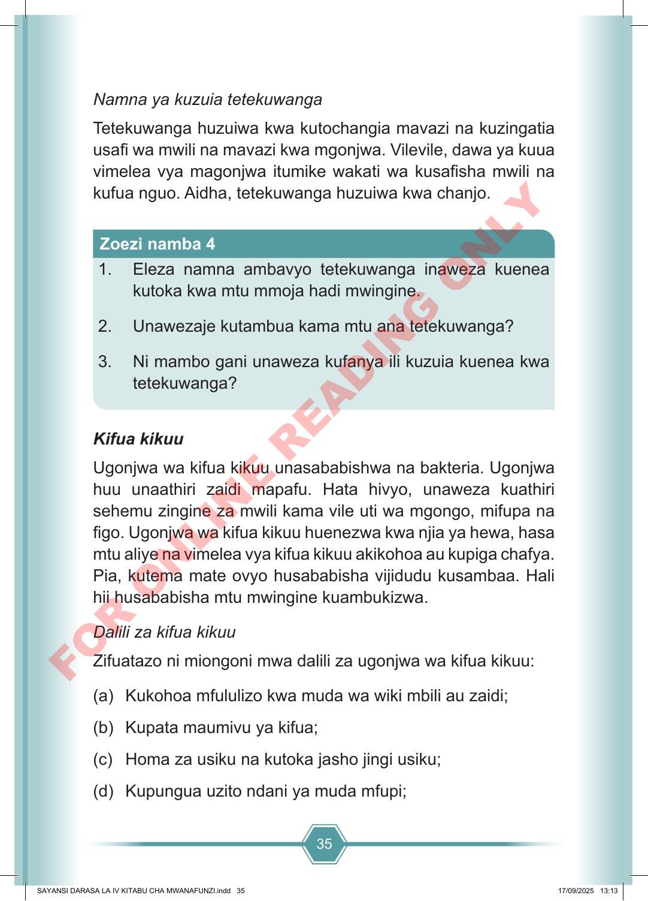

35 Namna ya kuzuia tetekuwanga Tetekuwanga huzuiwa kwa kutochangia mavazi na kuzingatia usafi wa mwili na mavazi kwa mgonjwa. Vilevile, dawa ya kuua vimelea vya magonjwa itumike wakati wa kusafisha mwili na kufua nguo. Aidha, tetekuwanga huzuiwa kwa chanjo. 1. Eleza namna ambavyo tetekuwanga inaweza kuenea kutoka kwa mtu mmoja hadi mwingine. 2. Unawezaje kutambua kama mtu ana tetekuwanga? 3. Ni mambo gani unaweza kufanya ili kuzuia kuenea kwa tetekuwanga? Zoezi namba 4 Kifua kikuu Ugonjwa wa kifua kikuu unasababishwa na bakteria. Ugonjwa huu unaathiri zaidi mapafu. Hata hivyo, unaweza kuathiri sehemu zingine za mwili kama vile uti wa mgongo, mifupa na figo. Ugonjwa wa kifua kikuu huenezwa kwa njia ya hewa, hasa mtu aliye na vimelea vya kifua kikuu akikohoa au kupiga chafya. Pia, kutema mate ovyo husababisha vijidudu kusambaa. Hali hii husababisha mtu mwingine kuambukizwa. Dalili za kifua kikuu Zifuatazo ni miongoni mwa dalili za ugonjwa wa kifua kikuu: (a) Kukohoa mfululizo kwa muda wa wiki mbili au zaidi; (b) Kupata maumivu ya kifua; (c) Homa za usiku na kutoka jasho jingi usiku; (d) Kupungua uzito ndani ya muda mfupi; SAYANSI DARASA LA IV KITABU CHA MWANAFUNZI.indd 35 SAYANSI DARASA LA IV KITABU CHA MWANAFUNZI.indd 35 17/09/2025 13:13 17/09/2025 13:13 F O R O N L I N E R E A D I N G O N L Y